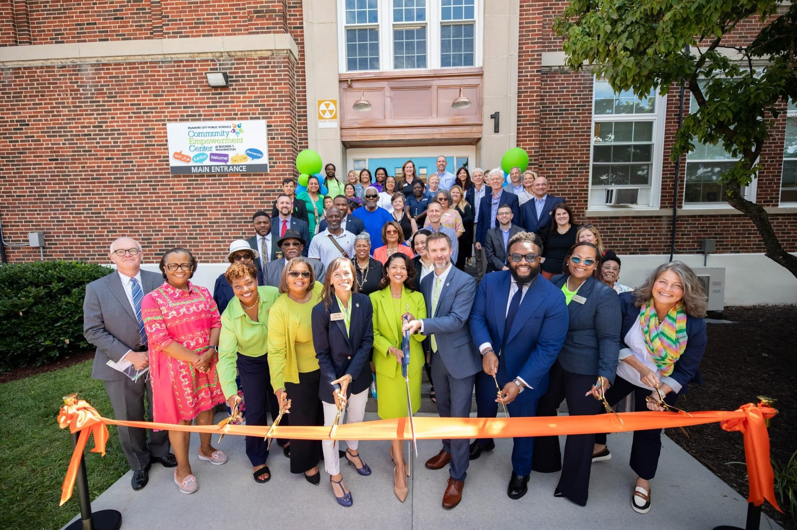
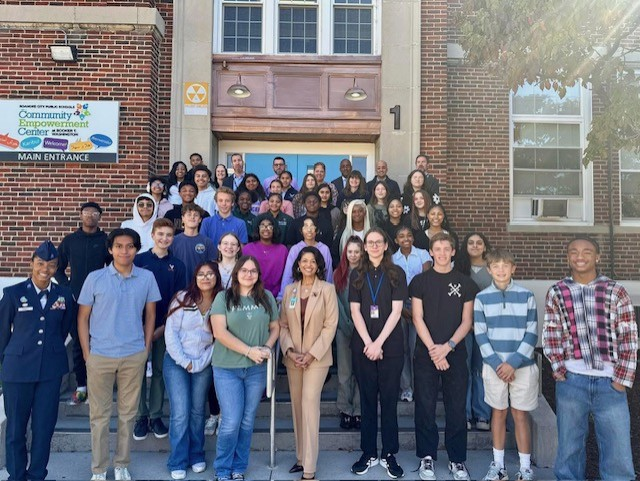
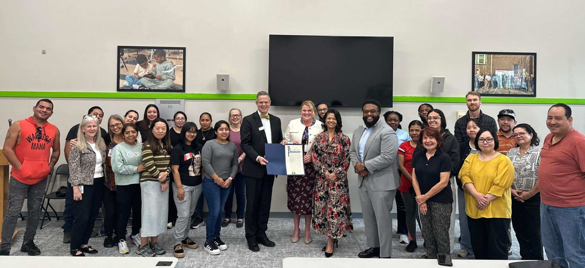
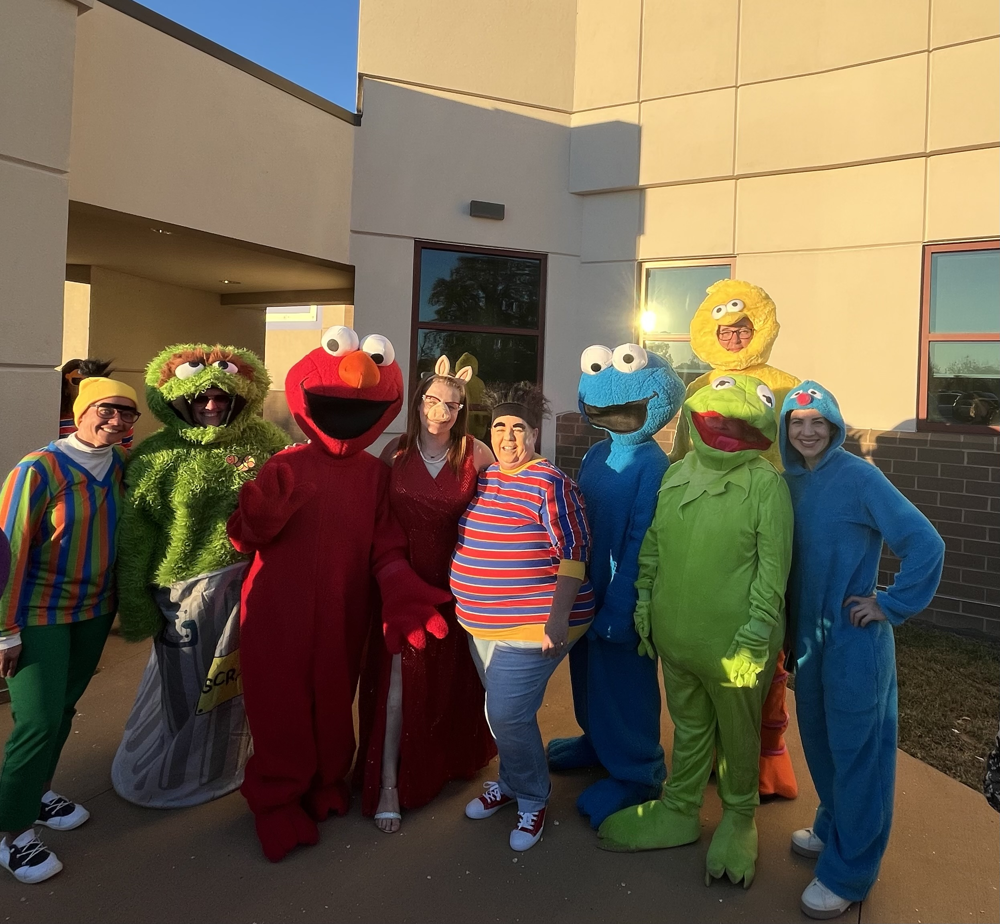
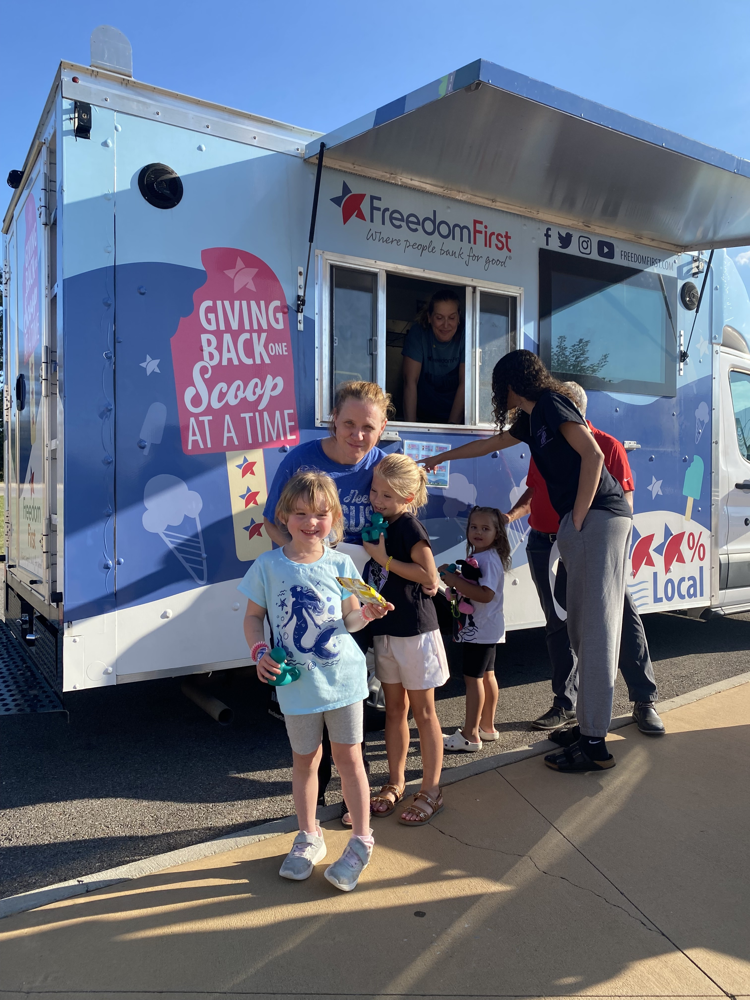

The Virginia Department of Health partnered with the Community Empowerment Center to offer free school physicals and immunizations during back-to-school season, operating the clinic directly from the center's facility.
Cohort 2 📍 Region 6
Roanoke City has built two community hubs serving as access points for health services, family resources, and basic needs within school communities. The Community Empowerment Center at Booker T. Washington partners with the Virginia Department of Health for school physicals and immunizations and has established sixteen community partnerships.
The LIFT Center at Fallon Park Elementary takes a grassroots approach. Three community events, including a "Book or Treat" literacy night, have drawn 1,108 attendees. Both centers share a coordinator and basic needs infrastructure across food pantries, clothing closets, school supplies, and clinic access.

The Community Empowerment Center opened in fall 2025 as a purpose-built facility at Booker T. Washington, offering families a food pantry, clothing closet, school supplies, and an in-school health clinic operated by the Virginia Department of Health. The center also hosts adult education courses through Region 5 Adult Education and Blue Ridge Literacy and has hired its first student intern, with additional placements anticipated.
Engagement Across Roanoke City's Centers This Fall
9 events · 1,243 attendees · 19+ partners




Students and civic leaders gather at the Community Empowerment Center while staff and community partners bring literacy nights and ice cream trucks to families at Fallon Park Elementary through the LIFT Center.
The Virginia Department of Health partnered with the Community Empowerment Center to offer free school physicals and immunizations during back-to-school season, operating the clinic directly from the center's facility.
"We have begun utilizing our Community Schools funds in order to support our CEC resource center with food pantry items and other basic needs supplies. Families have already begun accessing these resources through a co-investment program called 'Together for Success,' and have expressed sincere appreciation for this compassionate and non-judgmental assistance."
— Corey Allder, Director of Community Engagement